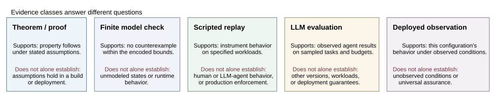
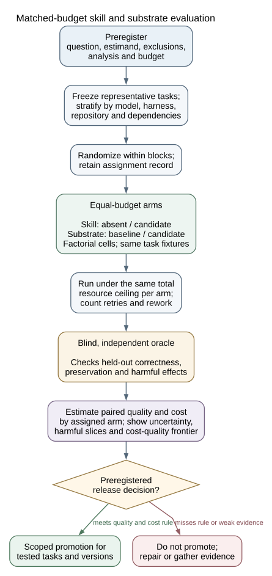
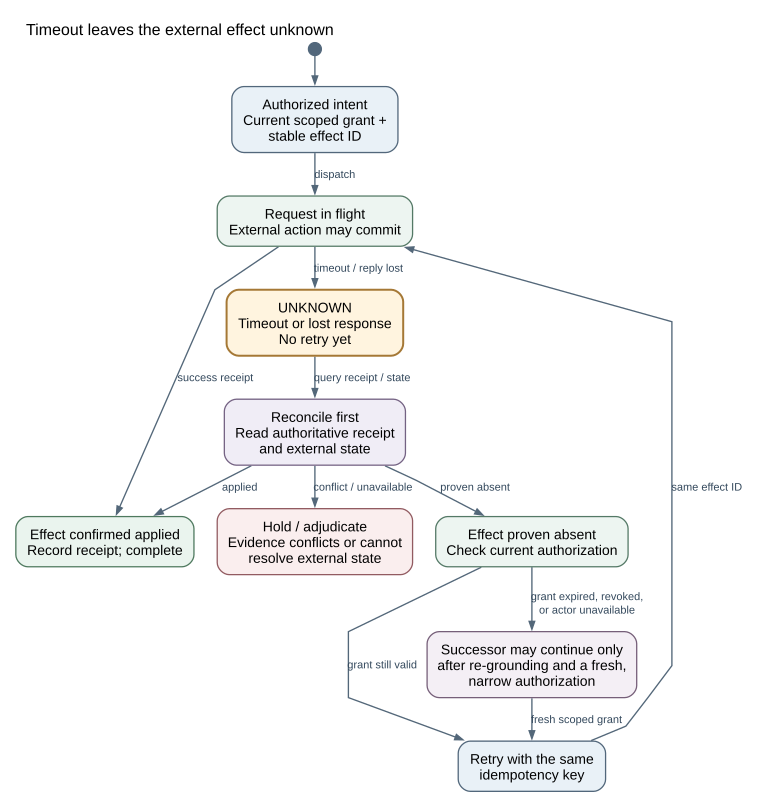

Evidence boundaries and safe continuation
Three diagrams from the 23 September 2026 research reconciliation. They explain what different evidence can support, how to compare skill or substrate treatments fairly, and how to recover from an uncertain external effect. They report no new experiment.
Evidence classes answer different questions
Read the cards independently. A theorem, bounded check, scripted replay, agent evaluation, and deployment observation each have a distinct scope; none automatically supplies the evidence required by the next class. Editable Mermaid source.

Compare at equal budgets
Freeze tasks and analysis first, randomize within blocks, and verify outcomes with an oracle independent of the treatment system. Estimate quality and total cost together, including retries and rework; scope any promotion to tested tasks and versions. Editable Mermaid source.

Scroll sideways to trace branches. Open full SVG
{kind=link}
A timeout leaves the effect unknown
First reconcile the receipt and external state. Retry only after proving the action is absent, using the same idempotency key and current authorization. Conflicting evidence stays on hold; a successor must re-ground and obtain fresh, narrow authority. Editable Mermaid source.

Scroll sideways to trace branches. Open full SVG
{kind=link}
Sources: manuscript field-gap report (gaps 1, 2, 3, 5, and 8) and substrate study explanation. See diagram README and browser review for source/render provenance, layout decisions and visual checks.